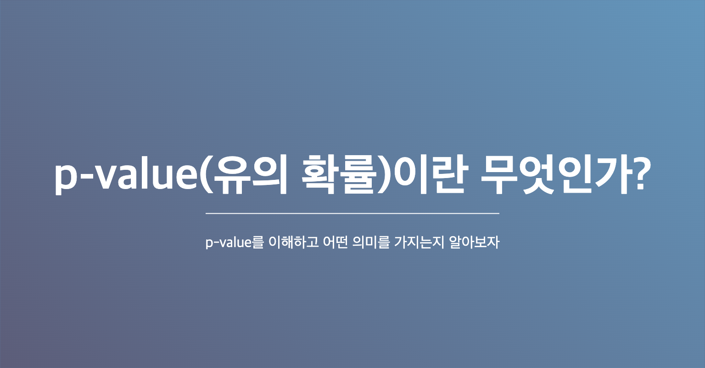

p-value(유의 확률)란 무엇인가?

머신러닝, 또는 통계관련된 문서, 논문을 보다 보면 p-value라는 말이 꼭 나온다. p-value란 무엇일까. 왜 사용하는 것인가. 오늘은 p-value에 대해서 정리해보고자 한다.
본 포스팅에서는:
- 최대한 복잡한 용어는 지양하여 작성하고 함.
- p-value를 잘못사용하지 않도록 정의함.
TL;DR
p-value(Probability-value)는 어떤 사건이 우연히 발생활 확률을 의미한다.
p-value가 낮다는건 어떤 사건이 우연히 발생할 확률이 낮다는걸 의미한다.
즉, 우리가 흔히 0.05 보다 작은 p-value는 이 사건이 우연히 일어났을 확률은 거의 없다는 것으로 생각한다.
따라서, 우연히 발생한 것이 아니라 분명히 인과관계에 따른 결과라고 추정한다.
p-value의 의미
p-value가 어떤 의미인지 알기 위해서는 수학적인 의미를 먼저 짚고 넘어가야한다. 한 문장으로 정리해본다면, p-value는 검정 통계량에 관한 내용 중 우리가 얻은 검정 통계랑보다 크거나 같은 값을 얻을 수 있는 확률 을 의미한다. 즉, 검정 통계량의 기본 가정인 귀무가설을 가정하고 얻게 되는 값이라는 점이다.
여기까지도 복잡했다면, 두 표본 집단으로 검정 통계량을 계산하였는데 여기서 p-value는 작을수록 귀무가설과 양립하지 않는다. 라는 것이다.
p-value는 어디에 사용하는가
결국 통계적인 가설 검정은 모집단의 일부인 표본만을 가지고 통계량을 계산하였기 때문에 확률적 오류가 발생할 수밖에 없다.귀무가설을 채택할지, 기각할지 결정할 때 발생할 수 있는 오류에 대해서 미리 알고있어야 한다.
(일반적인 가설 검정은 아래의 제 1종 오류를 중심으로 고려한다.)
제 1종 오류
귀무가설이 참임에도 불구하고 귀무가설을 기각할 때 발생하는 오류
제 2종 오류
귀무가설이 거짓임에도 볼구하고 귀무가설을 채택하려는 오류
이러한 오류에도 불구하고 귀무가설을 채택할 것인지는, 제 1종 오류를 저지를 확률인 p-value(유의 확률)과 제 1종 오류가 발생할 확률인 유의수준(a)으로 판단한다.
유의수준(a) > 유의확률(p-value) : (1-유의수준) * 100% 신뢰수준에서 귀무가설을 기각한다.
p-value의 한계
만능일것같아 보이는 p-value에도 분명한 한계점이 존재한다.
억지로 유의하게 만들 수 있다
분석에 사용되는 데이터가 증가할수록 p-value는 작아지게 됩니다. 따라서 0.05보다 작은 p-value가 필요하다면, p-value가 작아질때까지 데이터를 계속 추가하면 됩니다. (즉, 이론적으로는 데이터를 계속 추가하면 p-value가 0이 됩니다)
결국 p-value도 확률값이다
당연하지만 p-value도 지표로 사용되는 확률값일 뿐이다. 절대적인 지표가 아니기 때문에 p-value가 낮다고 무조건 맞는것이 아니다. 항상 통계는 확률을 의미한다는 점을 명심해야한다.
p-value의 기준이 왜 0.05인가
통상적으로 기준이 없을 경우 0.05로 쓰는 경향이 있다. 과학에서 통상적인 기준이 가지는 의미가 없다고 말할 순 없지만, 다른 p-value 기준을 사용하게 된다면 그에따른 이유가 분명히 있어야 한다는 점을 강조하고 싶다. 물론, 보통 기준으로 삼는 0.05를 만족할지라도 가설이 맞을 확률이 95%라고 확신할 수는 없다.(p-value를 만족한다고 해서 결과가 중요하다고 의미를 부여해서는 안된다. 이는 첫 번째 한계에서 언급한데로 데이터를 계속 추가하면 p-value가 낮아진다는 점과 같이 고려해보아야 한다.)